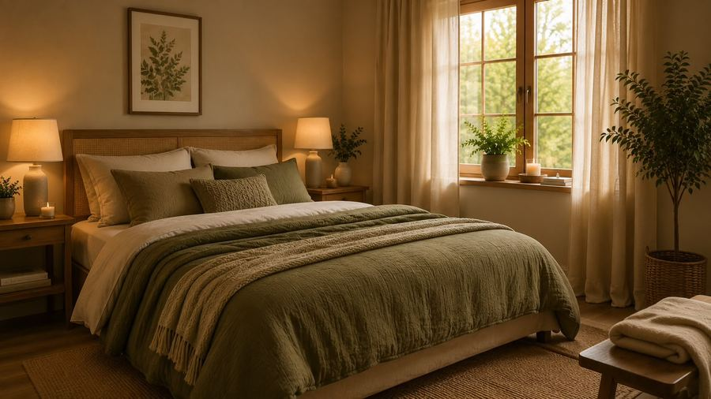
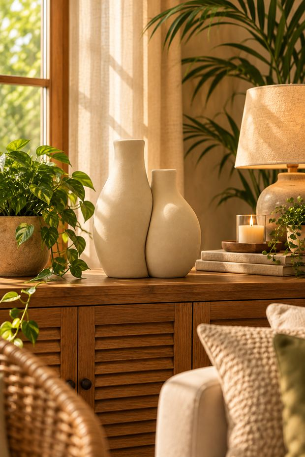
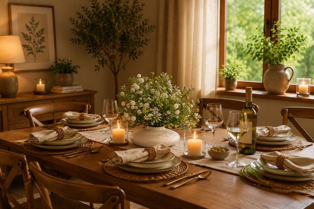
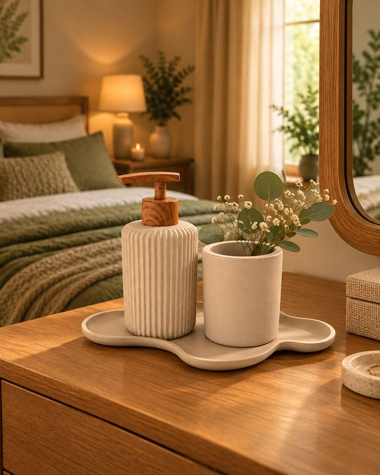
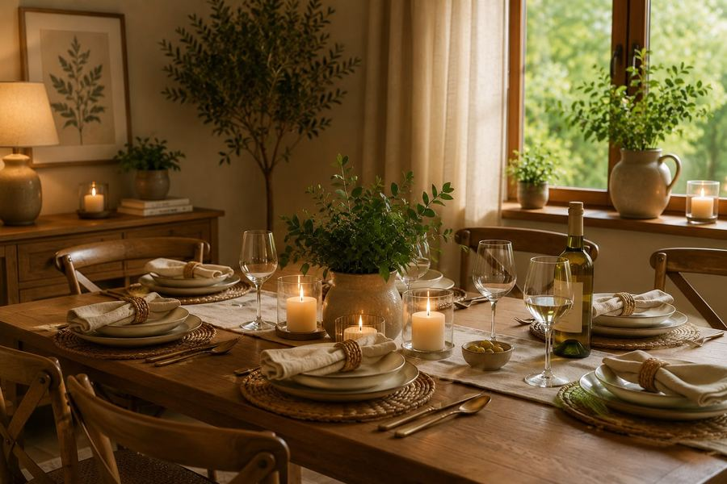
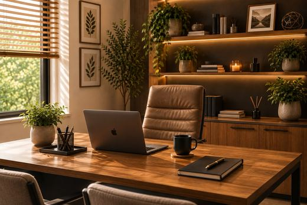

Nossa história
Muito além das paredes
Acreditamos que uma casa vai muito além das paredes e dos móveis. Ela é o cenário das nossas melhores lembranças, dos encontros em família, dos momentos de descanso e dos pequenos prazeres do dia a dia.

A curadoria
Foi com esse carinho que criamos a Casa da Filó: uma loja dedicada a selecionar produtos que unem beleza, funcionalidade e delicadeza, trazendo mais charme e aconchego para cada ambiente.



Do detalhe ao ambiente
De detalhes que transformam a mesa posta a peças que dão vida à decoração, cada escolha é pensada para inspirar você a criar espaços que reflitam seu estilo e contem um pouco da sua história.


Curadoria exclusiva com produtos de qualidade
Beleza, funcionalidade e acolhimento em cada detalhe
Atendimento humano e especializado
Para todos os estilos e momentos da vida
Aqui, sua casa é o lugar mais bonito de viver.
As fotos de ambiente são cenas de inspiração. As peças da Casa da Filó ficam na vitrine, com preço e medidas conferidos, e a compra acontece na loja — onde ficam frete, Pix, cartão e nota fiscal.
Ver todos os produtos